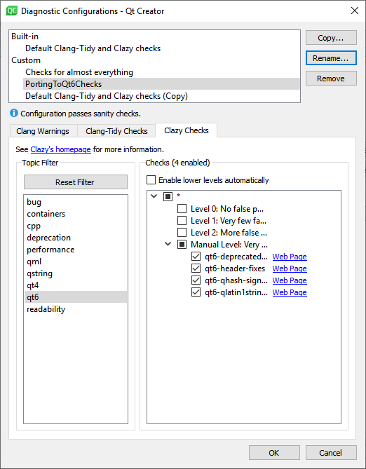

Porting C++ Applications to Qt 6 using Clazy checks
We've implemented some checks and fixits within the Clazy framework to help you port your applications from Qt 5 to Qt 6. In their own words: "Clazy is a compiler plugin which allows clang to understand Qt semantics". Get Clazy (https://invent.kde.org/sdk/clazy) and read on to make porting to Qt 6 smoother.
Clazy checks can be run as a plugin during compilation or over a JSON compilation database using clazy-standalone. The fixes are applied later, using clang-apply-replacements.
Clazy checks dedicated to Qt 6 porting
The following checks are dedicated to ease the port from Qt 5 to Qt 6.
qt6-deprecated-api-fixesqt6-header-fixesqt6-qhash-signatureqt6-qlatin1stringchar-to-uqt6-fwd-fixesmissing-qobject-macro
The checks have to be run against Qt 5. The fixed code is only going to compile against Qt 6. For this reason the above mentioned checks have to be run in one go. Clazy recommends running one test at a time to avoid conflict when applying fixes, but this is not an option when running those checks as a plugin.
How to apply Clazy checks
How to set up your project to run with Clazy and how to select and apply the checks is fully explained here: https://invent.kde.org/sdk/clazy#setting-up-your-project-to-build-with-clazy.
If you don't want to run the checks as a plugin but rather over a JSON compilation database, you need to use clazy-standalone. Please see https://invent.kde.org/sdk/clazy#clazy-standalone-and-json-database-support for instructions.
In a nutshell, assuming you have an up to date Clazy version installed, what needs to be done to run the checks as a plugin is explained below.
Set up your project to run with Clazy.
If using qmake
Add the following lines to your qmake command, as appropriate for your OS:
-spec linux-clang QMAKE_CXX="clazy" -spec macx-clang QMAKE_CXX="clazy"
For Windows with MSVC add QMAKE_CXX="clazy-cl.bat".
Run qmake.
If using CMake
Add: --DCMAKE_CXX_COMPILER=clazy to the cmake command.
Run cmake.
Select the checks:
export CLAZY_CHECKS="qt6-deprecated-api-fixes, qt6-header-fixes, qt6-qhash-signature, qt6-qlatin1stringchar-to-u, qt6-fwd-fixes, missing-qobject-macro"
Enable the fixits:
export CLAZY_EXPORT_FIXES=ON
Set the directories to be ignored by Clazy:
export CLAZY_IGNORE_DIRS=.*lib_dir.*
This will prevent Clazy checks from running on the libraries' files. This is necessary if the libraries' paths are included with -I and -F instead of -isystem and -framework. This is also necessary to avoid warnings from qt-header-fixes check, if the headers triggering the check are included in the included libraries' files.
Compile your code.
During compilation .yaml files are created next to the source files.
To apply the fixits, run:
clang-apply-replacements <path_to_yaml_files>
This will modify the source files, consider backing up your code.
If there are some conflicts between the fixits, you will be notified and no file will be changed.
Not all porting can be done with automatic fixits. Please look carefully at the warnings during compilation for the code that will have to be changed manually.
How to apply Clazy checks within Qt Creator
You can access Clazy checks within Qt Creator by selecting Tools > Options > Analyzer (or Qt Creator > Preferences > Analyzer on macOS).
You must create your own configuration and select the Clazy checks dedicated to porting that you can find under Level 2 and Manual Level sections in Qt Creator version 4.14.1, or later. You can use the qt6 filter to locate most of the checks.

Note: We recommend that you deselect all other checks, except the porting checks, to make it easier to apply fixits and to avoid unnecessary conflicts.
To run the checks, select Analyze > Clang-Tidy and Clazy.
For more information about configuring and running Clazy checks, see Qt Creator: Using Clang Tools.
A word of caution
Within Qt Creator, conflicts between fixits are not being warned against. If there is more than one fixit on the same line, be careful when applying the fixits.
Once a fixit has been applied, running the checks again will fail, because the new code will only compile against Qt 6.